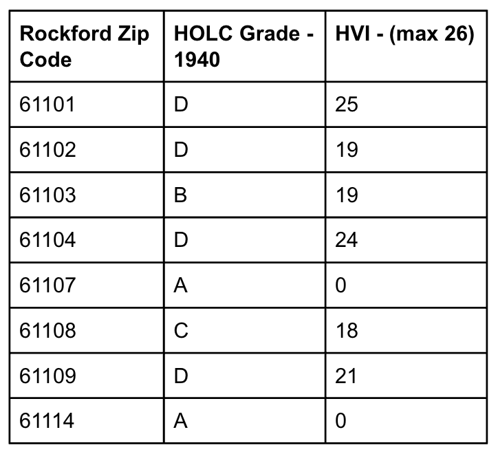
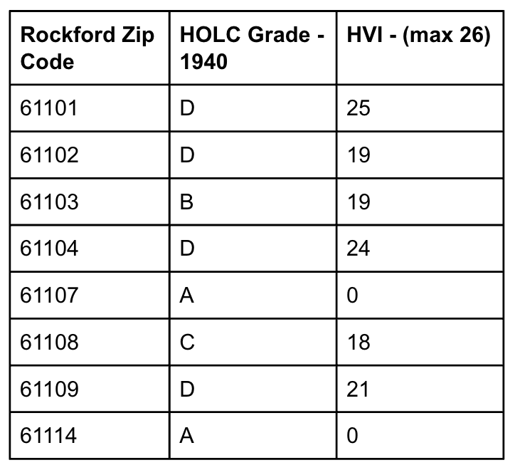

Methods
Data: Demographics, SVI, and HVI via US Census Bureau and CDC; Redlining boundaries from HOLC 1940's Map; Land use zoning maps from WinGIS; Collection 2, Tier 1, Level 2 dataset from Landsat-8
- ST Band 10 - Thermal IR
- QA Pixel - mask out cloud shadows
- Band 4 - Red
- Band 5 - NIR
Computations and GIS:
- Map neighborhoods by zipcode, HVI, and HOLC redlining rating
- Calculate neighborhood level and citywide SUHI using javascript in Google Earth Engine (GEE) $$ SUHI = meanLST_{urban} - meanLST{rural} $$
- Calculate NDVI in GEE $$ NDVI = \frac{NIR - Red}{NIR + Red} $$
- Compare SUHI with NDVI, HVI, and land use to determine vulnerable neighborhoods and potential mitigation strategies.
GEE Code Access
 
